포클랜드의 잠수함을 둘러싼 이야기들
게시: 2021-10-28T06:30:36+09:00
<벨그라노가 잠수함을 만나지 않았다면> 핵잠수함 HMS Conqueror에게 격침된 ARA Belgrano (사진1)는 WW2 당시의 USS Phoenix (CL-46)를 사들여 약간 개조한 경순양함으로서 1만2천톤 배수량에 32.5 노트의 속력을 내는 크고 빠른 군함. 당시 벨그라노는 영국 항모 전단으로부터 약 450km 정도 떨어져 있었는데, 대략 9~10시간 항해하면 닿을 수 있는 거리. 아무리 경순양함이라고 해도, WW2 당시의 낡은 기술로 만들어진 군함이 현대적인 항모와 미사일 구축함들을 당해낼 수 있었을까? 어쩌면 가능. 일단 벨그라노는 포탄을 주고받으며 싸우던 무식한 군함답게 주 장갑판 (main belt) 두께가 140mm로 꽤 두꺼웠음. 또한 기본 설계 자체가 몇 방 정도는 적 포탄을 맞고도 견딘다는 개념으로 설계되었으므로 엑조세 미사일 3~4방 정도는 견뎠을 거라고. 게다가 6인치 주포를 3문씩 장착한 포탑이 5개나 있었고 5인치 양용포도 8문, 40mm 보포르 대공포 등 대공 무장도 착실 (사진2). 결정적으로 레이더도 꽤 신형으로 장착했고 영국제 Sea Cat 대공 미사일도 장착하고 있었음. 따라서 느리고 무장량이 빈약한 해리어들이 날아들어도 반드시 벨그라노를 격침시킨다고는 말 못했을 듯. 게다가 WW2 당시 구축함 2척의 호위를 받고 있었는데 이 구축함들도 엑조세 미사일을 장착하고 있었음. 벨그라노에는 프랑스제 알루에뜨(Alouette III) 헬리콥터도 탑재하고 있어서 (아마 자살이나 다름없는 임무였겠지만) 영국 항모 전단을 찾아내는데 꽤 도움이 되었을 것이고 일단 30km 안쪽까지만 접근할 수만 있었다면 먼저 엑조세 미사일로 항모를 때려 발걸음을 좀 느리게 만든 뒤, 32노트의 속도로 따라 붙어 6인치 함포 유효 사거리인 18km까지 접근하여 신나게 파운딩을 할 수 있었을 것. (사진3은 WW2 당시 벨그라노와 같은 급인 Brooklyn class 순양함 USS Brooklyn (CL-40)이 1943년 시실리 섬을 포격하고 있는 모습) ...이라고 아르헨 해군에서는 꿈꾸며 벨그라노를 보냈으나 현실은 핵잠에 걸려 꼬르륵. 이후 아르헨 해군은 "이건 미친 짓이야, 난 여기서 빠지겠어"라며 공군에게 모든 것을 맡기고 빠져 버림.
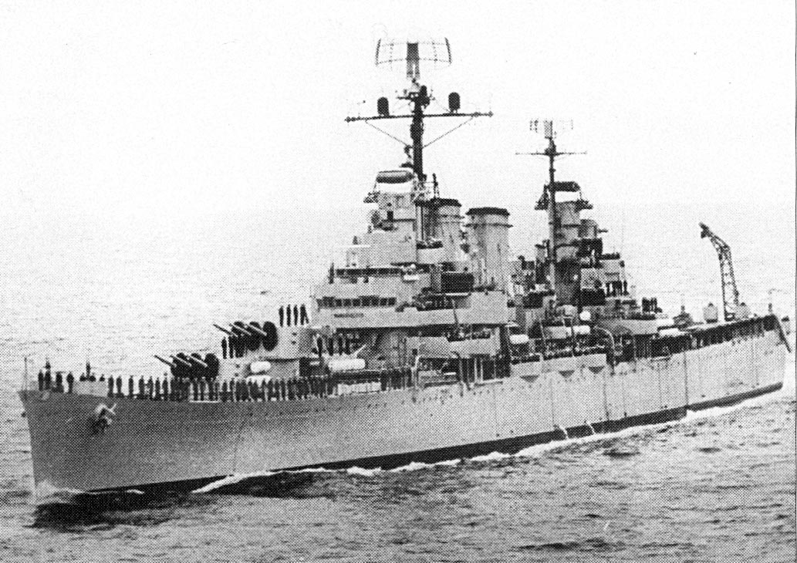 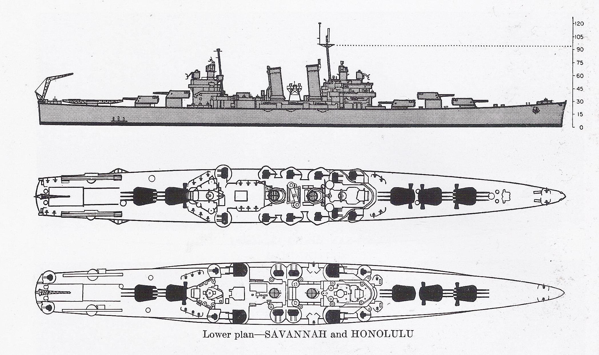 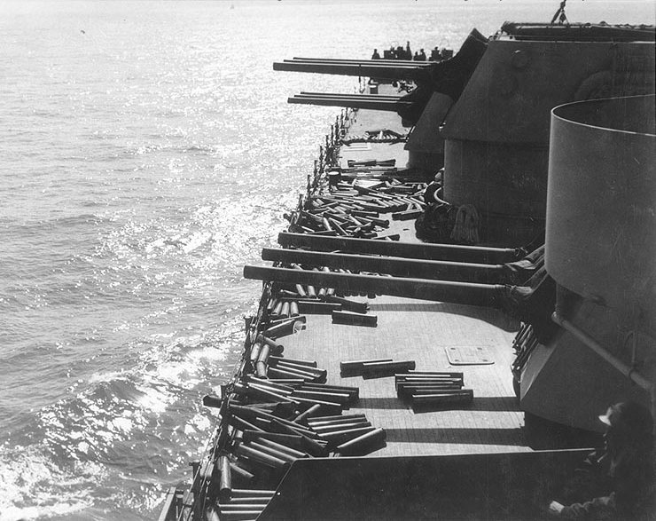
<영국 핵잠은 어떻게 벨그라노를 찾았을까?> 아르헨티나에게도 항공모함 ARA Veinticinco de Mayo (사진1. 5월 25일이라는 뜻으로 1810년 아르헨의 5월 혁명 기념일)이 있었음. 5월 1일, 베인티싱코 데 마요가 영국 항모전단에게 A-4 Skyhawk 편대를 출격시키기 일보 직전까지 갔으나 이런저런 문제로 결국 공격을 포기. 그 이유는 몇가지가 있었으나 가장 중요한 이유는 베인티싱코 데 마요의 대잠기이자 해상 정찰기인 Grumman S-2 Tracker (사진2)가 영국 항모전단을 찾아내는데 끝내 실패했기 때문. 그런데 생각해보면 이상하지 않은가? 높은 하늘에서 시속 300~400km로 날면서 레이더로 해면을 흝어도 적함을 찾는 것이 어려운데, 영국 핵잠수함 HMS Conqueror는 대체 어떻게 아르헨 순양함 ARA Belgrano를 찾았을까? 상식적으로 passive sonar를 이용해서 벨그라노의 스크루 소음을 찾는다고 해도 상당히 근접한 거리까지 가야 그걸 찾을 수 있고, 위험을 무릅쓰고 잠망경을 내밀고 찾는다고 해도 눈에 보이는 거리에는 제한이 있다. 일반적으로 잠망경 높이에서 보이는 수평선까지의 거리는 18~19km에 불과. 항공모함처럼 높이가 상당한 선박이라면 25km 정도 떨어진 것도 잠망경에 보임 (사진3). 그런데도 영국 핵잠 컨커러는 필요할 때 정확하게 벨그라노를 찾아내어 따라다니고 있었고, 심지어 베인티싱코 데 마요에게도 역시 핵잠 HMS Splendid가 멀찍이 따라붙어서 여차하면 공격할 준비를 하고 있었음. (사진4) 대체 영국 잠수함은 어떻게 그럴 수 있었을까? 결론은 '그거 군사 기밀'. 다만 미국의 정찰위성이 아르헨 군함들의 위치를 파악하여 (위성사진 특성상 실시간까지는 아니더라도) 그 대략적인 예상 위치를 영국 해군성에게 제공했을 거라고 다들 추측만 할 뿐. ** 결국 잠수함은 잠수함 자체도 중요하지만 잠수함을 지원해줄 방대한 정보체계의 건설이 선행되어야 한다는 것. ** 그런데 여기서 추가적인 의문. 대체 영국 핵잠들은 잠수한 상태에서 그런 정보를 어떻게 전달받았을까?
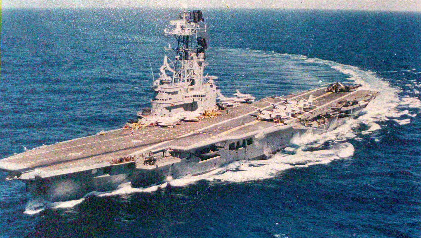 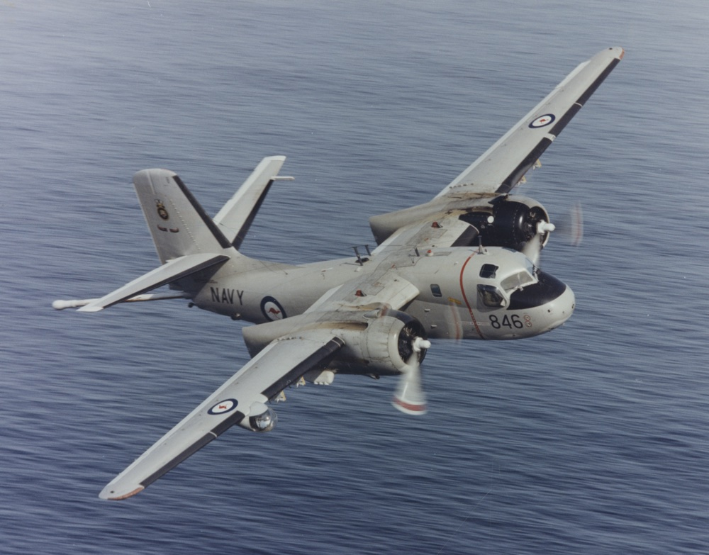 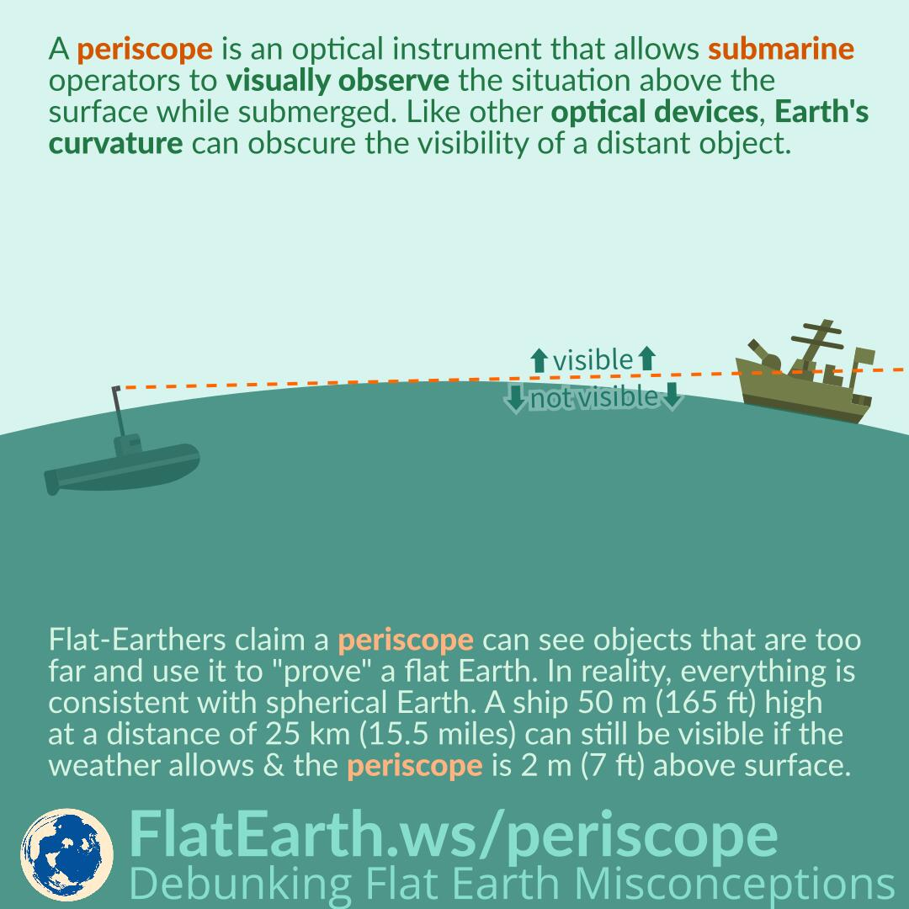
<잠수함에게 전화를 거는 방법> 바닷물은 전기가 아주 잘 통하는 도체이기 때문에 전파가 깊이 뚫고 들어갈 수 없음. 따라서 무선 통신은 불가능. 하지만 수십 Hz 수준의 매우 낮은 저주파는 어느 정도 깊이까지는 바닷물 속에서도 잡힘. 그 깊이를 antenna depth라고 하며 대략 수면 아래 수십 m 정도. 그런데 이런 저주파는 대역폭이 낮아서 전달가능한 데이터가 수백 bit/sec 정도라는 것도 문제지만 더 큰 문제는 초저주파를 만들어내기 위해 필요한 안테나의 규모가 상상 이상이라는 것. Very Low Frequency (수천 Hz) 만해도 안테나 길이가 수km에 달하는데, VLF만 해도 소금물을 뚫고 들어가는 깊이가 충분치 않아 그 느릿느릿 전문을 받기 위해 몇 m 정도로 꽤 얕은 수심까지 올라와야 함. 그래서 하루에 일정한 시간을 정해놓고 그 시간대에 꽤 앝은 수심으로 부상하여 VLF 전문을 수신한 뒤 다시 잠항하기도 함. 그런데 아예 극저주파(Extremely Low Frequency)를 사용하면 수심 아래 수십 m까지 잘 뚫고 들어감. 대신 극저주파는 만들기가 더욱 어려워서 그 송출 안테나의 길이는 수백~수천 km여야 함. 이게 실현 가능할까? 가능함! 지구 자체를 일종의 쌍극 안테나(dipole antenna, 사진1)로 만들어서 쓰면 됨. 전도율이 낮은 암석이 많은 지역에 전극 하나를 박고 수백 km 떨어진 지역에 상응하는 전극을 박은 뒤, 이 두 지역 중간에서 전류를 공급하면 이 두 전극 사이의 대지가 일종의 쌍극자가 되는 것 (사진2). 지금은 해체되었지만 미해군은 Project Sanguine이라고 해서 위스컨신 주의 두 해군 기지(사진3)에 이걸 설치했음. 사진4가 그 중 전극 하나를 담당하는 Clam Lake 기지의 모습. 미국이 하면 당연히 쏘련도 함. 쏘련도 무르만스크 일대에 ZEVS라는 이름으로 이런 ELF 안테나 기지를 수백 km에 걸쳐 건설하여 82 Hz의 극저주파를 방출. 극저주파의 특성상 지구의 한 곳에서 방출한 신호는 지구 반대편에서도 잘 잡힘. 즉 전세계 어디에 있는 잠수함이든 해면 아래 수십 m 정도까지만 부상하면 저 기지로 전보를 보낼 수 있는 것. 쏘련이 ZEVS를 기동했을 때 그 신호를 남극의 과학기지에서도 수신했다고 함.
** 다만 저런 극저주파로 송신을 하려면 저렇게 수백 km 길이의 안테나가 필요하여 잠수함에서는 정보를 보낼 길이 없는데다 수신 대역폭도 매우 낮으므로 (확인된 바는 없지만) 대개 실제 보내는 전문은 '몇날 며칠에 수면 위에 안테나 올려라, 그때 전화 좀 하자'는 정도의 간단한 것일 거라고.
** 아마 포클랜드 전쟁 때 HMS Conqueror가 받은 벨그라노의 대략적인 위치도 저렇게 받은 것이 아닐까 추측. 다만 컨커러는 벨그라노에게 어뢰를 쏘기 전에 런던에게 허가를 구하는 전문을 송신했고 그 허락도 수신. 아마 좀더 복잡한 방식의 통신을 했을 듯.
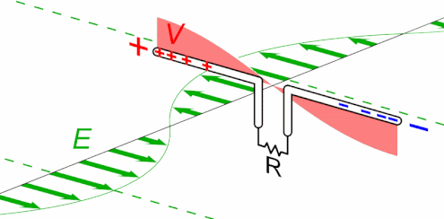 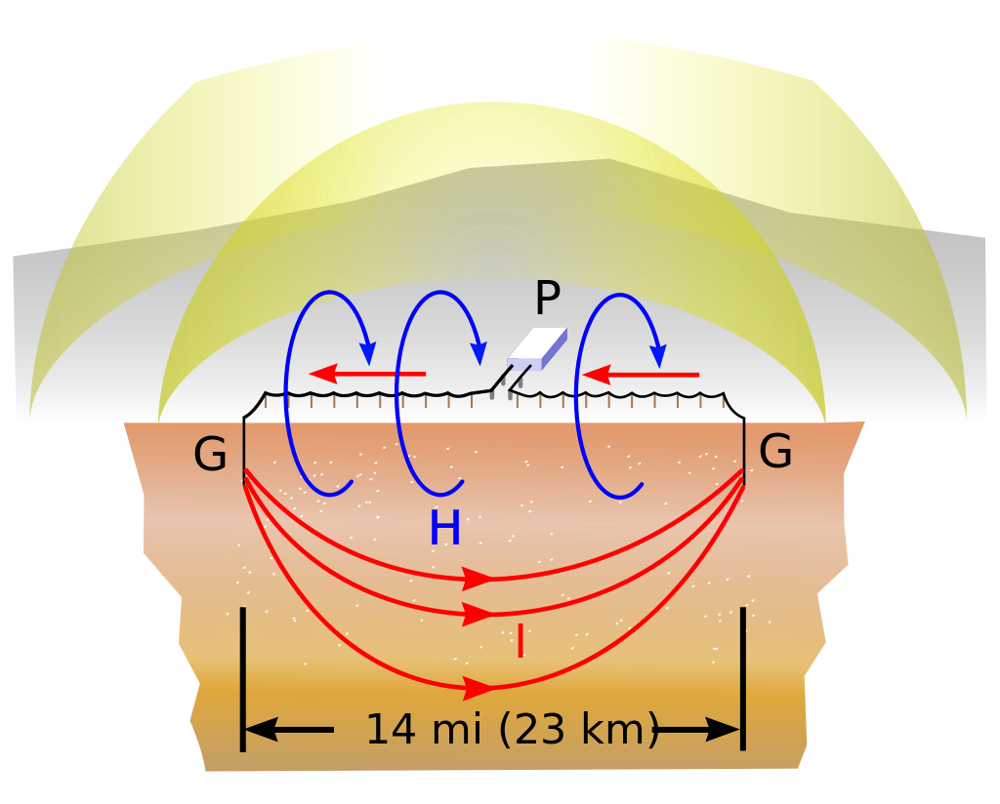 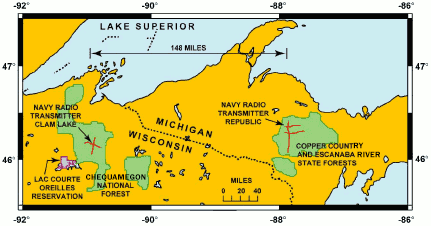 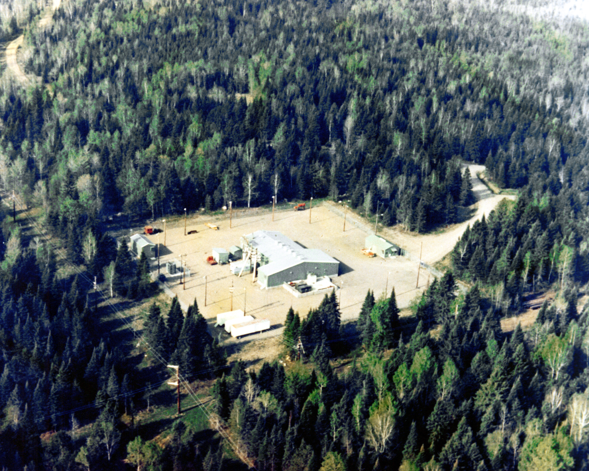
<지구상 어느 곳에 있는 잠수함에게든 전화를 걸 수 있는 나라들> SLBM을 장착한 잠수함에게 언제든 필요할 때 즉각 전문을 보낼 시설은 핵잠수함을 가진 국가가 반드시 가져야 하는 필수적인 인프라. 그러나 극저주파(Extremely Low Frequency) 송출 안테나는 기술력 뿐만 아니라 영토의 크기도 큰 역할을 하기 때문에 영국이나 프랑스도 ELF는 갖추지 못함. 현재까지 ELF 시설을 갖춘 국가는 미국, 러시아, 중국, 인도 뿐. 중국이 가장 최근에 ELF 시설을 갖추면서 '지진파 연구용'이라고 발표를 했으나 아무도 믿지 않고 당연히 잠수함 통신용이라고 생각함. 그 증거로 중국 내에서도 그 '지진파 연구용' ELF 시설이 중국 내 어디에 있는지 아무도 모른다고. 다만 이런 극저주파 안테나 근처에 사는 사람들에게는 안 좋은 소식이 극저주파는 암을 유발시킨다는 주장이 있다고 함. ** 사진2는 중국의 ELF라는 설명이 가끔 따라붙기도 하지만 저건 중국의 직경 500m 짜리 천체 전파 망원경. 이름은 텐얀(天眼).
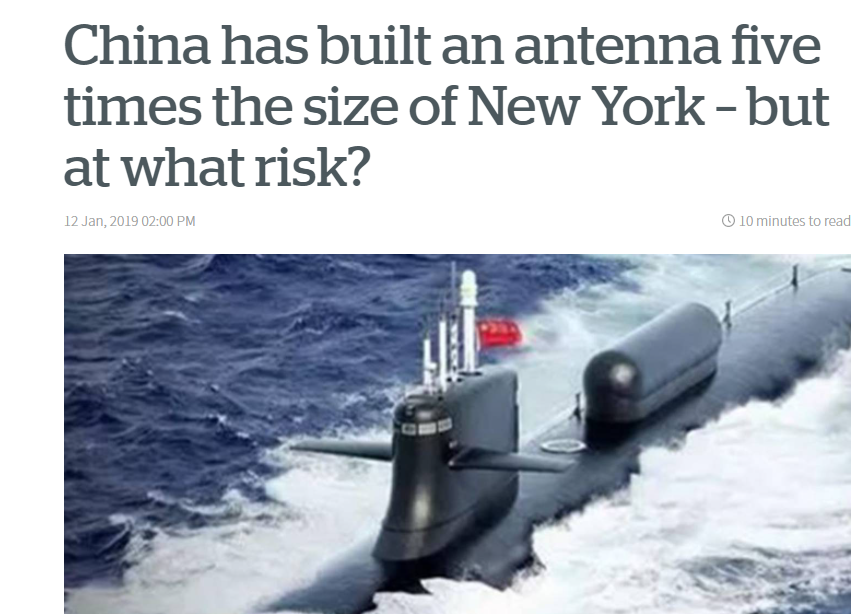